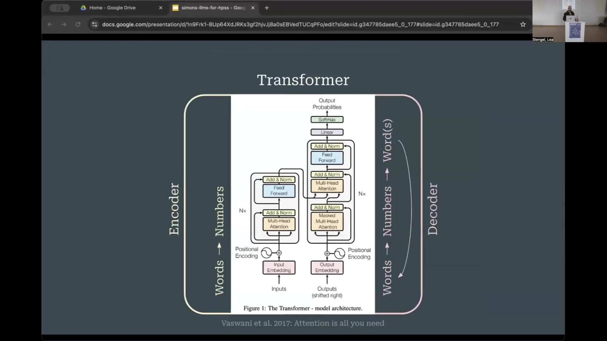

3 A Primer on Large Language Models
3.1 Overview
This presentation provides a primer on Large Language Models (LLMs), beginning with the Transformer architecture, its encoder-decoder structure, and the concept of contextualized word embeddings. It details the development of pre-trained language models, distinguishing between encoder-based models like BERT (Bidirectional Encoder Representations from Transformers) for full context understanding and decoder-based models like GPT (Generative Pre-trained Transformers) for text generation.
The evolution of LLMs in science domains is discussed, highlighting models such as BioBERT, Specter, and SciBERT, and various adaptation methods including continued pre-training, fine-tuning, contrastive learning (e.g., SentenceBERT), and Retrieval Augmented Generation (RAG). Key distinctions in LLM concepts cover architectures, fine-tuning strategies, and word versus sentence embeddings.
Applications of LLMs in History and Philosophy of Science and Technology Studies (HPSS) research are categorized into: dealing with data/sources, analyzing knowledge structures (e.g., entity extraction, mapping discourses), studying dynamics (e.g., conceptual histories), and examining knowledge practices (e.g., citation context analysis). Trends in HPSS LLM usage include accelerating interest, publication in diverse journals, varied customization levels, and increased accessibility (e.g., BERTopic).
Significant concerns are computational resources, model opaqueness, and lack of training data/benchmarks. HPSS-specific challenges involve the historical evolution of language, the need for critical reconstructive perspectives, and issues with sparse, multilingual, or old script data. Recommendations emphasize building LLM literacy, developing shared resources, and maintaining HPSS methodological integrity while leveraging LLMs to bridge qualitative/quantitative approaches and reflect on the field’s intellectual history (e.g., co-word analysis).
3.2 The Transformer Architecture: Foundation of LLMs

The Transformer architecture, introduced in 2017, serves as the fundamental framework for virtually all contemporary Large Language Models (LLMs). Originally conceived for machine translation tasks, such as converting German text to English, the Transformer model features a distinctive dual-stream structure. These two streams, an encoder on the left and a decoder on the right, are interconnected.
The encoder processes the input source language sentence. For instance, words from a German sentence are fed into the encoder, where they are transformed into numerical representations. These numerical data undergo processing through multiple layers, within which contextualized word embeddings are progressively refined. A key characteristic of the encoder is its ability to process the entire input sentence simultaneously. Each word in the source sentence can interact with, or “attend to,” every other word, enabling the model to construct a comprehensive representation of the sentence’s overall meaning.
The numerical representation generated by the encoder is then passed to the decoder stream. The decoder’s function is to generate the output sentence in the target language, for example, English words. As each English word is produced, it is fed back into the decoder as input for generating the subsequent word. This iterative process continues until the complete target sentence is formed.
Unlike the encoder, the decoder operates with a unidirectional attention mechanism, meaning that generated words can only consider preceding words in the sequence. They cannot access future words, a constraint inherent to the next-word prediction task. However, they can look back at the words already generated in the sequence. Both streams utilize layers to increasingly contextualize word embeddings.
3.3 Pre-trained Language Models: BERT and GPT

Following the introduction of the Transformer architecture, researchers began re-engineering its encoder and decoder streams independently to develop pre-trained language models. These models are designed to achieve a strong general understanding or generation capability in a language, which can then be adapted through further, often minor, training for specific Natural Language Processing (NLP) tasks.
On the encoder side, this re-engineering led to the development of models like BERT, which stands for Bidirectional Encoder Representations from Transformers. The BERT family of models remains highly influential. BERT’s operational principle allows every word in an input sequence to attend to every other word, facilitating a comprehensive, full-context understanding of the entire input simultaneously. The term “bidirectional” in its name refers to this ability of words to consider context from both preceding and succeeding words, while “encoder-based” indicates its derivation from the Transformer’s original encoder stream.
Conversely, the decoder stream gave rise to models like GPT (Generative Pre-trained Transformers), which form the basis of well-known applications such as ChatGPT. Due to their architectural constraint of only looking at predecessor words, GPT models excel at generating new words and, consequently, new text. This generative capability is a primary differentiator from BERT models, which are not inherently designed for extensive text generation.
The core difference lies in their primary functions: GPT models are generative, designed to produce language, whereas BERT-like models are geared towards a coherent, full-context understanding of sentences. Beyond these two primary types, other model architectures exist, including those that combine encoder and decoder components. Furthermore, there are advanced techniques for utilizing decoders in ways that enable them to perform more like encoders, achieving bidirectional context understanding. An example of such an approach is XLM, which is based on XLNet. Understanding the distinction between generative models and full-context understanding models is crucial.
3.4 Evolution and Adaptation of LLMs for Scientific Domains

The evolution of Large Language Models (LLMs) has seen a significant focus on applications within various scientific domains and tasks. An overview of this development reveals a diverse landscape of models. Notably, encoder-type models, similar to BERT, are more commonly developed and applied in scientific contexts than decoder-type models. Early influential models in this space include BioBERT, Specter, and SciBERT. These, along with newer models, cater to a wide array of scientific fields such as biomedicine, chemistry, material science, climate science, mathematics, physics, and the social sciences.
Adapting LLMs to the specific language of scientific domains involves several methods. The foundational method is pre-training, where a model initially learns language patterns. This occurs either by predicting the next token, typical for GPT-style models, or by predicting randomly masked words, characteristic of BERT-style models. However, full pre-training demands extensive computational resources and vast datasets, making it impractical for many research groups. A more feasible approach is continued pre-training, where an already pre-trained model (e.g., a general BERT model) is further trained on a corpus of domain-specific text, such as physics literature.
Another common adaptation strategy is fine-tuning for downstream tasks. This involves adding new layers on top of a pre-trained model and training these specific layers to perform tasks like classification, for example, to determine sentiment or identify named entities. Prompt-based methods were mentioned as another adaptation technique, though not elaborated upon.
Contrastive learning is a key method for generating sentence or document embeddings that reside in the same vector space as word embeddings. SentenceBERT is a prominent and widely adopted technique for achieving this. This is particularly relevant as Iryna Gurevych, a keynote speaker, is known for her work in this area and might discuss SentenceBERT.
Retrieval Augmented Generation (RAG) represents a significant adaptation approach. RAG is not a single model but rather a pipeline or system where at least two, and often more, models work together. This technique allows for the adaptation of an LLM to a specific domain, such as a scientific field, without the need for extensive retraining of the core generative model. The RAG process typically involves a user submitting a query (e.g., “What are LLMs?”). A model, often BERT-like, then encodes this query into a sentence embedding. This embedding is used to search a database of relevant documents, retrieving the most similar passages. These retrieved passages are then integrated into the prompt provided to a generative LLM, which uses this augmented context to produce an answer. This mechanism is commonly used by systems like ChatGPT when they access external information, such as searching the internet.
Finally, reasoning models or agents are emerging as complex systems. These are not monolithic LLMs but rather integrated ensembles of multiple LLMs combined with a variety of other software tools.
3.5 Key LLM Concepts and Application Categories in HPSS Research
Several key distinctions are important to retain as a primer on Large Language Models. These include the existence of different model architectures (such as encoder-only, decoder-only, and encoder-decoder structures), a variety of fine-tuning strategies for adapting models to specific tasks, the crucial difference between word embeddings and sentence embeddings (which represent fundamentally different levels of semantic representation), and the varying levels of abstraction at which these models can be applied.
An ongoing survey is being conducted on the use of LLMs as tools in History and Philosophy of Science and Technology Studies (HPSS) research. Preliminary findings from this survey have led to the identification of four main categories, or bins, for classifying these applications:
Dealing with Data and Sources: This category encompasses uses of LLMs for interacting with research data and primary/secondary sources. Specific tasks include facilitating data discovery, parsing complex or large-scale textual data, and improving the overall management of source materials.
Knowledge Structures Analysis: LLMs are employed to analyze and extract knowledge structures embedded in texts. This includes the identification and extraction of specific entities relevant to HPSS, such as scientific instruments, celestial bodies, or chemical substances. It also involves mapping complex conceptual landscapes, a traditional area of HPSS inquiry, like analyzing science policy discourses or tracing the formation and interaction of interdisciplinary fields.
Dynamics: This category focuses on using LLMs to study the evolution and change of concepts and language over time. A prime example is the analysis of conceptual histories of words, tracking how their meanings and usages shift within scientific communities, an approach similar to that demonstrated by researchers like Nina Janich and Pelin Doğan.
Knowledge Practices: LLMs can be applied to investigate various knowledge practices. One specific example is citation context analysis. This method has an established tradition within HPSS, though in recent times it has often been predominantly used for evaluative purposes (e.g., research assessment). However, it holds potential for a broader range of HPSS-specific analytical tasks.
3.6 Trends, Concerns, and Accessibility in HPSS LLM Usage
Several trends and concerns are evident regarding the use of Large Language Models (LLMs) in History and Philosophy of Science and Technology Studies (HPSS). There is an accelerating interest in LLMs within the HPSS community. Publications detailing LLM applications are found predominantly in information science-oriented journals such as Scientometrics and JASIST (Journal of the Association for Information Science and Technology). However, an increasing number of papers are also appearing in journals traditionally less focused on computational methods. This suggests that the enhanced semantic capabilities of modern LLMs are making them more attractive and relevant to qualitative researchers, philosophers, and other scholars within HPSS.
The degree of customization in LLM use varies widely across the field. Some researchers utilize readily available, off-the-shelf tools like ChatGPT, while others at the other end of the spectrum are engaged in developing entirely new LLM architectures tailored to specific HPSS needs.
Despite the growing adoption, several repeating concerns are frequently voiced. The substantial computational resources required to train or even fine-tune large models pose a significant barrier. The opaqueness of these models, often referred to as their “black box” nature, makes it difficult to understand their internal decision-making processes, which is a concern for interpretability and trustworthiness. There is also a perceived lack of sufficient training data, particularly for specialized historical contexts or languages relevant to HPSS research. Furthermore, the absence of established benchmarks specifically designed for evaluating LLM performance on HPSS-relevant tasks makes it challenging to compare different models or approaches systematically. Finally, researchers face a trade-off between different types of LLMs, as no single model is universally optimal; the most adequate model must be chosen based on the specific research question and purpose.
On a positive note, there is a discernible trend towards increased accessibility of LLM-related tools. For example, BERTopic, a popular library for topic modeling, is noted for its ease of use, largely due to robust maintenance and active development, making advanced techniques more approachable for a wider range of researchers.
3.7 HPSS-Specific Challenges and Methodological Considerations for LLM Adoption
The adoption of Large Language Models (LLMs) in History and Philosophy of Science and Technology Studies (HPSS) necessitates acknowledging several challenges specific to the discipline. A primary challenge is the historical evolution of concepts and language. Most LLMs are trained on contemporary language, which may not align with the historical texts and linguistic conventions central to much HPSS research. This requires strategies such as training custom models on historical corpora or using existing models with a keen awareness of their inherent biases and limitations when applied to historical material.
Another significant challenge stems from the reconstructive and critically reflective perspective characteristic of HPSS. Scholars in this field typically do not take scientific texts at face value but instead engage in critical interpretation, reading “between the lines” to understand the authors’ situated contexts, motivations, and subtle discursive strategies, such as boundary work. Current LLMs are generally not trained to detect or analyze these nuanced aspects of texts. Therefore, methods need to be developed to enable models to approximate this type of critical reading. Furthermore, HPSS research often contends with practical data issues like sparse datasets, the presence of multiple languages (often historical variants), and archaic scripts, all of which pose difficulties for standard LLM application.
To address these challenges and effectively leverage LLMs, several recommendations are proposed for the HPSS community. Firstly, there is a need to build LLM literacy. This involves understanding the underlying theory of these models, their capabilities, limitations, and the broader implications of their use. While natural language interfaces for coding may become more common, acquiring some coding skills can be beneficial. A crucial aspect of literacy is moving beyond the superficial use of tools that might produce appealing visualizations or graphs without a deep comprehension of the underlying processes or the significance of the results.
Secondly, the development of shared datasets and benchmarks specifically tailored to HPSS research questions and materials is essential for robust and comparable evaluations. Thirdly, it is vital to stay true to core HPSS methodologies. While HPSS research problems need to be translated into tractable NLP tasks (such as classification, generation, or summarization), care must be taken to ensure that these technical tasks do not overshadow or “hijack” the fundamental research purpose and critical inquiries of HPSS.
Despite these challenges, LLMs also present new opportunities. They offer promising avenues for bridging qualitative and quantitative research approaches, potentially fostering more integrated and multifaceted analyses. Moreover, the rise of LLMs provides an occasion for HPSS to reflect on its own intellectual history and pre-existing analytical frameworks. For instance, current LLM techniques resonate with earlier methods developed within HPSS, such as co-word analysis, pioneered by scholars like Michel Callon and Arie Rip in the 1980s, often in conjunction with Actor-Network Theory (ANT).